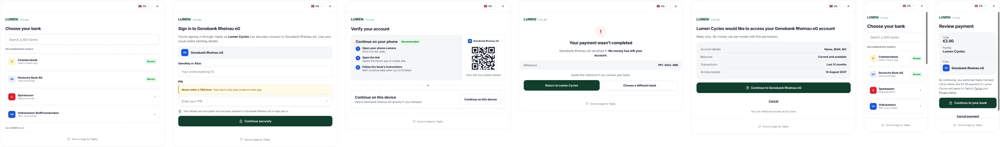
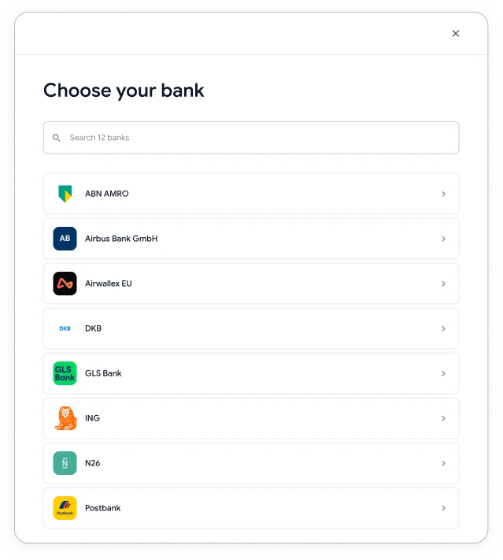
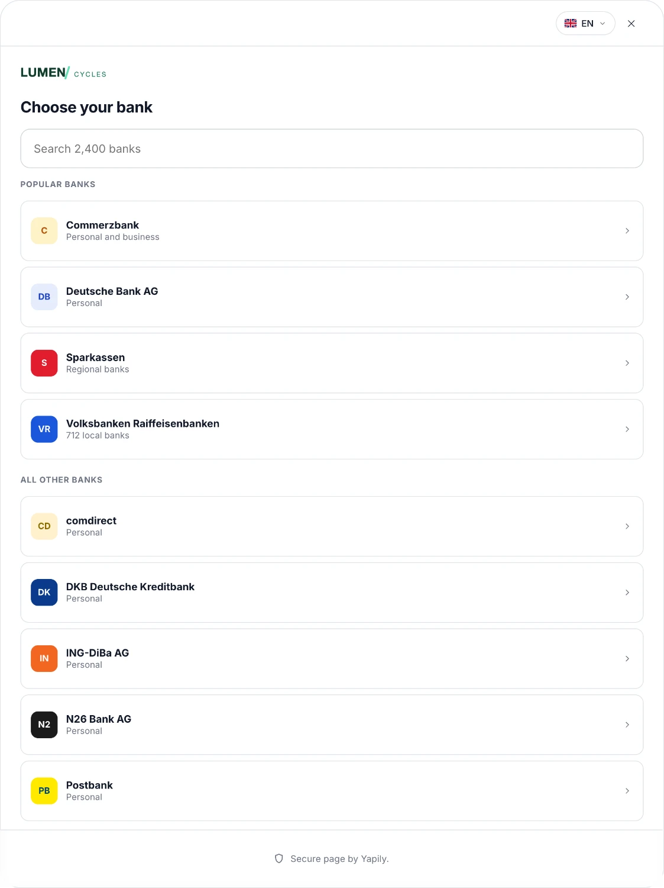
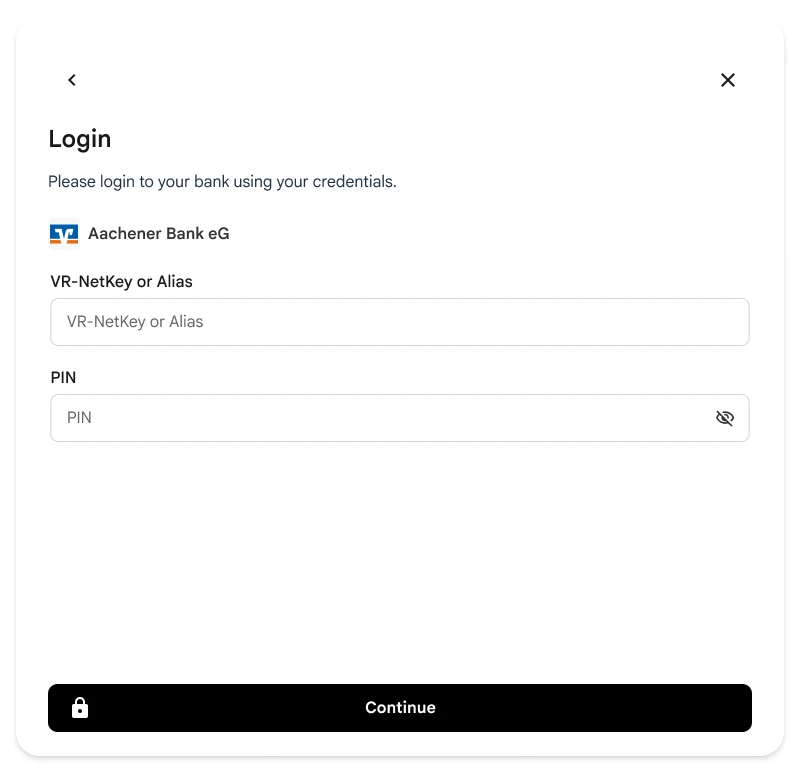
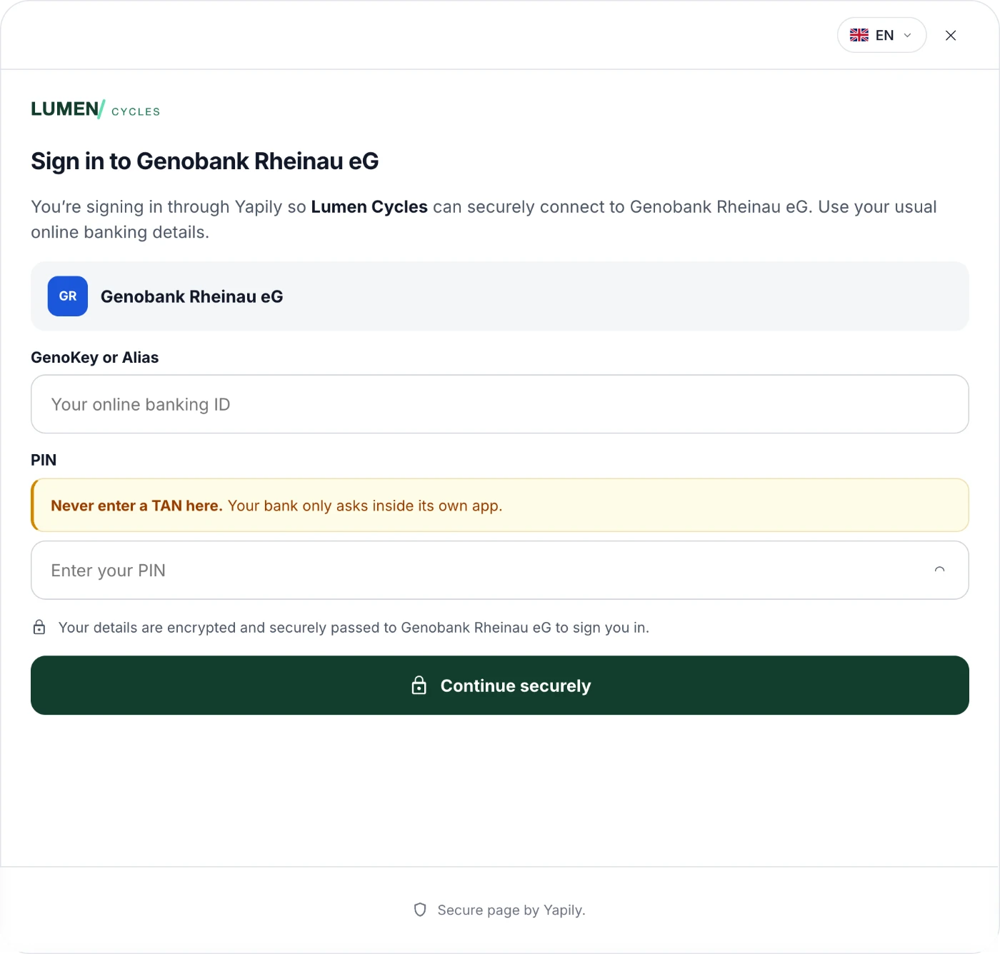

Yapily Hosted Pages
Hosted Pages is Yapily’s white-label open banking flow, letting businesses launch payment and account-connection experiences without building and maintaining individual bank integrations.
At a glance

Hosted pages user flows
A clickable prototype in two viewpoints. On a phone the bank’s app opens in place; on desktop the flow hands off to a phone by QR code and waits for it to come back.
Open the user flowsThe problem
Yapily connected customers to more than 1,500 banks, but offered little abstraction above the API. Customers had to build their own consent, bank-selection and authentication flows, often taking 4–6 months, and sometimes more than a year.
Working with the product manager, we first improved documentation. It helped, but customers were still spending time building bank infrastructure instead of their own product.
That led us to create Hosted Pages: a configurable, hosted flow that productised the repeated parts of open banking integration.
A customer on abstracting the API Watch on YouTube. Opens in a new tab.My role
I co-originated the product and led its product design from launch onwards, working across product, engineering, compliance and implementation.
I also led the 2023–2026 research and experimentation programme, covering more than ten markets, multiple languages, payments and data products, and several different bank authentication models.
The challenge was that there was never one fixed flow. What users saw depended on their market, bank, device, licence, product and customer configuration.
So instead of redesigning one interface, we measured and improved individual parts of the system.
Bank discovery
Research showed that finding a bank often took 5–15 seconds, compared with around 1–3 seconds in competitor experiences.
We:
- grouped regional banks under recognisable parent brands
- introduced Popular Banks
- changed institution names to match what customers actually called them
- identified search aliases and legacy names missing from the search index
After launch, finding a bank fell to 1–3 seconds in most markets and 3–5 seconds in branch-heavy markets such as Germany.


Authentication
Embedded authentication created a trust problem: users were being asked to enter banking credentials into an unfamiliar interface.
We improved the experience by matching fields to each bank’s terminology, clearly identifying the bank and regulated provider, and testing trust signals such as the customer’s own branding.
We also discovered that retry behaviour differed by bank, so engineering replaced our universal retry rules with institution-specific logic.
Together, this work improved embedded-login conversion by roughly 13%.


Cross-device handoff
Desktop users could be handed to their banking app through a QR code.
Research showed this helped in some markets but created unnecessary friction in others, particularly where app-to-app coverage was weak or banks introduced competing QR codes.
We removed the step where it did not help and improved the guidance where it did.
Conversion improved by roughly 10% in markets where the handoff remained.
Accessibility
An external accessibility audit identified issues across contrast, focus behaviour and screen-reader support.
When we found that screen readers were announcing raw SVG markup and making parts of the flow unusable, we postponed a release and fixed the problems before shipping.
In a later study with 21 participants in Germany, 62% preferred the new experience, rising to 78% among participants with disabilities.
Results
Reflection
The biggest lesson was that many apparent interface problems were really problems with data, bank capability or system behaviour.
Research was often most valuable not because it told us how to redesign a screen, but because it showed us which part of the system actually needed fixing.